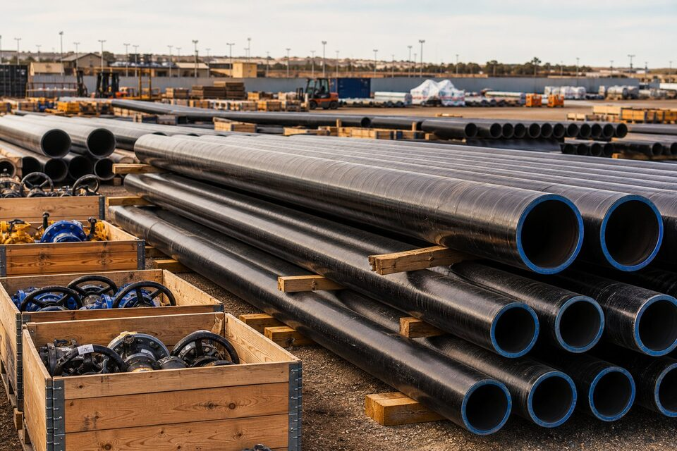

بسته اقلام یک پروژه خط لوله
| دسته | اقلام اصلی | استاندارد/معیار رایج |
|---|---|---|
| لوله | لوله خط انتقال در گریدهای مختلف | استاندارد لوله خط انتقال |
| شیرآلات | شیر توپی تمامعبور، شیر یکطرفه، شیر کنترل | استاندارد شیرهای خط انتقال |
| اتصالات | زانو، سهراهی، تبدیل، خمهای القایی | استاندارد اتصالات جوشی |
| فلنج و اتصال | فلنجهای جوشی و واشرها | استاندارد فلنجها |
| پوشش | پوششهای ضدخوردگی و عایق | مشخصه فنی پروژه |
| حفاظت کاتدی | راکتیفایر، آند و متعلقات | مشخصه فنی پروژه |
هر دسته باید به صورت یکپارچه با مدارک بازرسی و قابلیت ردیابی خریداری شود.

وندورلیست و صلاحیت تامینکننده
در پروژههای بزرگ، کارفرما فهرست فروشندگان مورد تایید خود را ابلاغ میکند و خرید اقلام حساس محدود به این فهرست است. تامینکننده باید سابقه تحویل مشابه، گواهینامههای کیفیت و توان مستندسازی داشته باشد. فرآیند تایید صلاحیت شامل بررسی مدارک، سوابق و در مواردی ممیزی حضوری است.
بازرسی و مدارک
- بازرسی شخص ثالث در کارخانه برای لوله، شیرآلات و اتصالات حساس.
- کنترل گواهی مواد با شماره ذوب برای تمام اقلام فلزی.
- تستهای هیدرواستاتیک و غیرمخرب مطابق الزامات.
- بازرسی پوشش و حفاظت در برابر آسیبهای حمل.
- مستندسازی کامل: گواهی مواد، گزارش تست، صورت بازرسی و گواهی مبدا در صورت نیاز.
لجستیک و انبارش
- برنامهریزی حمل شاخههای بلند با تریلرهای مخصوص.
- حفاظت پوشش در بارگیری و تخلیه با تسمههای مناسب.
- انبارش روی بستر مناسب با تکیهگاههای چوبی.
- تحویل مرحلهای هماهنگ با پیشرفت جوشکاری و نصب.
- کنترل موجودی و ردیابی شماره ذوب در سایت.
نکات قراردادی
- الزامات بازرسی و حق حضور بازرس کارفرما را شفاف کنید.
- جریمههای تاخیر و شرایط فورس ماژور را مشخص کنید.
- الزامات بستهبندی و حفاظت در حمل را قید کنید.
- شرایط پرداخت را به تحویل مدارک بازرسی گره بزنید.
- دوره گارانتی و خدمات پس از تحویل را تعریف کنید.
مدیریت ریسک زنجیره تامین
- منبعیابی چندگانه برای اقلام حساس برای جلوگیری از توقف در صورت ناتوانی یک سازنده.
- پایش مستمر پیشرفت ساخت در کارخانه با گزارشهای دورهای.
- ذخیره احتیاطی برای اقلام پرمصرف مانند اتصالات و فلنجها.
- بند فورس ماژور و برنامه جایگزین حمل در قرارداد.
- هماهنگی هفتگی با پیمانکار اجرا برای تنظیم برنامه تحویل.
مدیریت زمان ساخت و برنامه تحویل
در پروژههای خط لوله، فقط قیمت و کیفیت فنی مهم نیستند؛ زمان تحویل هم میتواند سرنوشت پروژه را تعیین کند، چون تاخیر در تحویل اقلام اصلی، برنامه نصب و راهاندازی کل خط را به تاخیر میاندازد. مدیریت زمان ساخت باید از همان لحظه عقد قرارداد شروع شود. اولین اقدام، توافق روی یک برنامه زمانبندی ساخت است که نقاط کلیدی مانند تایید نقشهها، شروع تولید، مقاطع بازرسی، تستهای نهایی و تاریخ آماده بارگیری را مشخص کند. این برنامه باید با برنامه اجرایی پروژه همگام باشد و هر انحراف از آن، بلافاصله گزارش و تحلیل شود. دوم، بازرسیهای حین ساخت را نباید به انتهای کار موکول کرد؛ نقاط توقف تعریفشده برای بازرسی، اگر از ابتدا در قرارداد و برنامه ساخت دیده شوند، هم کیفیت را تضمین و هم از دوبارهکاریهای پرهزینه در مرحله پایانی جلوگیری میکنند. سوم، پیگیری فعال یا اکسپدایسینگ اهمیت دارد؛ تماسهای دورهای، دریافت گزارش پیشرفت و بازدیدهای میدانی از کارخانه، تصویری واقعی از وضعیت ساخت ارائه میدهند که با وعدههای شفاهی قابل جایگزینی نیست. چهارم، مدیریت تغییرات است؛ هر تغییری در مشخصات فنی پس از شروع ساخت، هم بر زمان و هم بر هزینه اثر دارد و باید از طریق فرایند رسمی کنترل تغییر با ارزیابی اثر زمان-هزینه انجام شود. پنجم، لجستیک حمل را دست کم نگیرید؛ برای اقلام سنگین یا با ابعاد خاص، هماهنگی حمل، مجوزهای مسیر و زمانبندی تحویل در سایت باید همزمان با ساخت برنامهریزی شود، نه پس از آن. در نهایت، ذخیره ایمنی زمانی در برنامه پروژه برای اقلام با ریسک تاخیر، یک تصمیم مدیرتی عاقلانه است؛ تجربه نشان میدهد حتی با بهترین برنامهریزی، عوامل بیرونی مانند ترخیص گمرکی یا محدودیتهای حمل میتوانند برنامه را جابجا کنند.
جمعبندی
تامین موفق خط انتقال، هماهنگی بین دهها قلم، چندین تامینکننده و یک برنامه بازرسی منسجم است. با برنامهریزی اولیه و شفافسازی الزامات، ریسک توقف پروژه به حداقل میرسد.
سوالات رایج
مهمترین اقلام یک پروژه خط لوله چیست؟
لوله خط انتقال، شیرآلات قطع و اتصال، اتصالات جوشی و خمها، فلنجها، پوشش و عایق، تجهیزات حفاظت کاتدی و در پروژههای بزرگ، تجهیزات ایستگاههای تقویت فشار. هر قلم استاندارد و مدارک خاص خود را دارد.
چرا وندورلیست در این پروژهها اهمیت دارد؟
کارفرمایان بزرگ برای اقلام حساس خطوط انتقال، فهرست فروشندگان مورد تایید دارند. خرید خارج از این فهرست حتی در صورت کیفیت ظاهری، در بازرسی رد میشود و ریسک توقف پروژه دارد.
بازرسی حین ساخت برای چه اقلامی الزامی است؟
برای لوله، شیرآلات و اتصالات حساس معمولاً بازرسی شخص ثالث در کارخانه سازنده الزامی است؛ شامل کنترل مواد، ابعاد، تستها و بستهبندی پیش از حمل.
چالش اصلی لجستیک خطوط انتقال چیست؟
طول زیاد شاخهها و حجم بالای محموله: برنامهریزی حمل، سکوی بارگیری و تخلیه، انبارش صحیح برای جلوگیری از آسیب پوشش و مدیریت تحویل هماهنگ با پیشرفت اجرا.
مطالب مرتبط
- راهنمای لوله خط انتقال؛ سطوح مشخصه و گریدها
- راهنمای تامین تجهیزات صنایع نفت و گاز
- راهنمای وندورلیست پروژههای نفتی
- راهنمای کامل گواهی مواد و تست
- راهنمای تأیید صلاحیت تأمینکننده
با ارائه فهرست اقلام پروژه، استعلام یکپارچه شامل لوله، شیرآلات، اتصالات و مدارک بازرسی تهیه میشود تا هماهنگی بین اقلام و زمان تحویل تضمین گردد.
مشاهده صفحه محصول ← ثبت RFQ همین محصولتامین این تجهیزات را به پیشرو تجهیز فرتاک بسپارید
شرکت پیشرو تجهیز فرتاک تامینکننده تخصصی تجهیزات صنعتی برای پروژههای نفت، گاز، پتروشیمی، فولاد و نیروگاهی است. برای دریافت پیشنهاد فنی و قیمت، استعلام (RFQ) خود را ثبت کنید تا کارشناسان مهندسی فروش در کوتاهترین زمان پاسخ دهند.
- تامین لوله انتقاللوله خط انتقال در گریدهای مختلف با مدارک کامل
- تامین تجهیزات صنایع نفت و گازپکیج کامل مطابق وندورلیست کارفرما